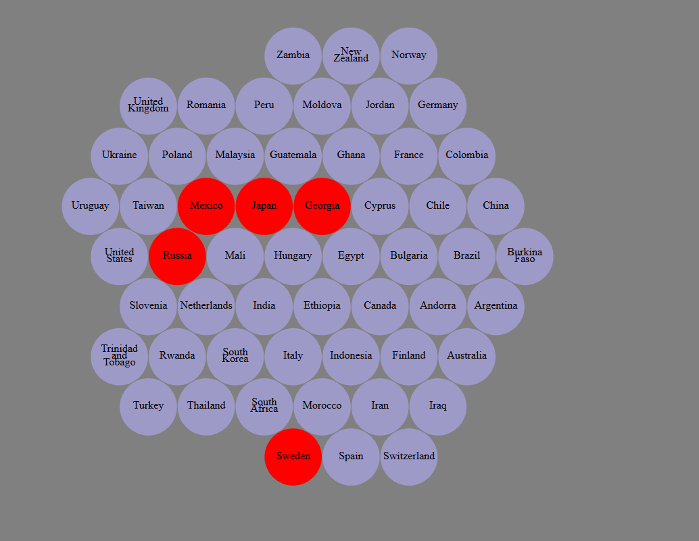
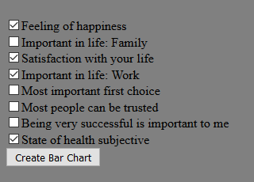
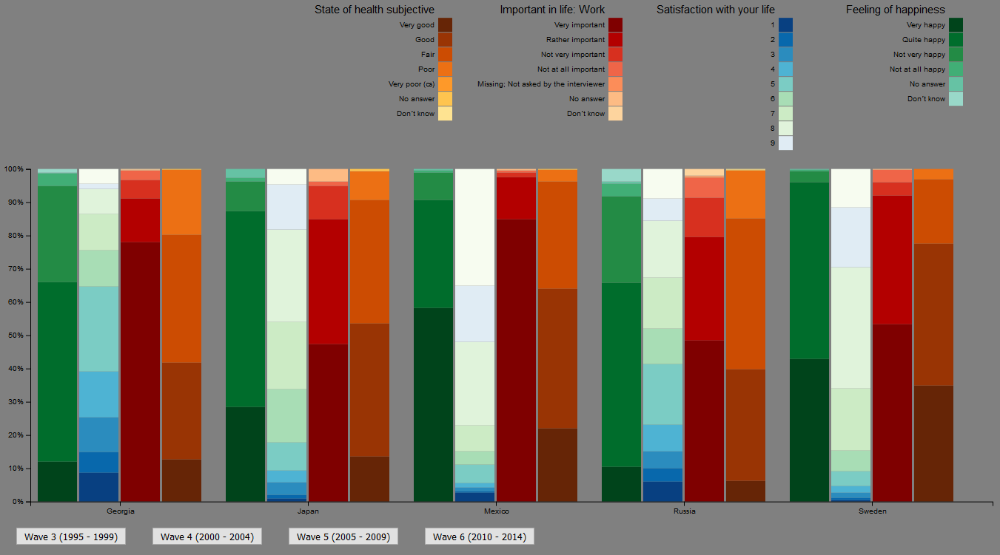
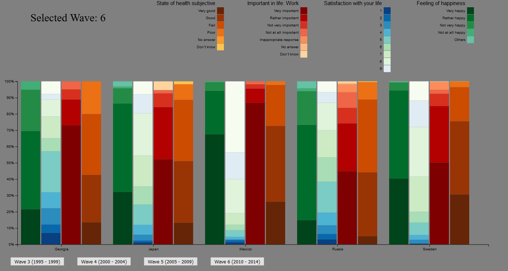
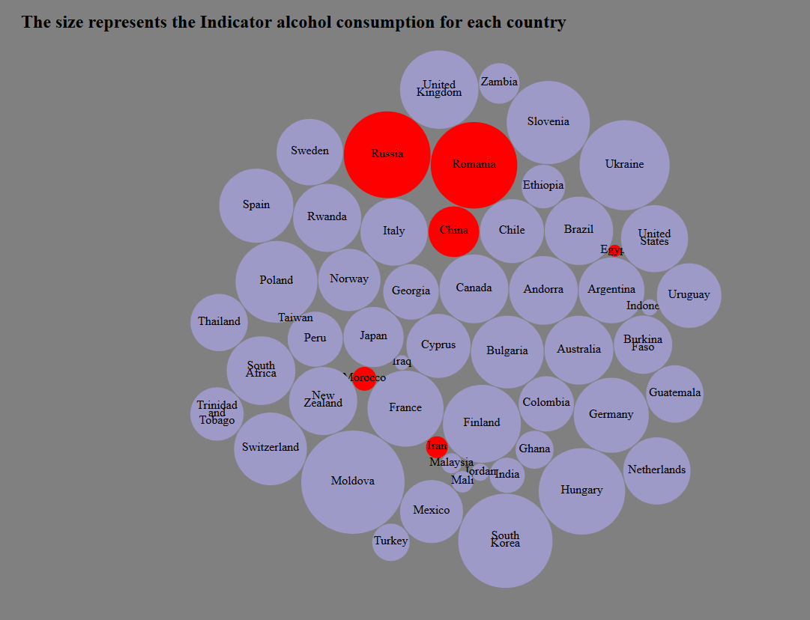
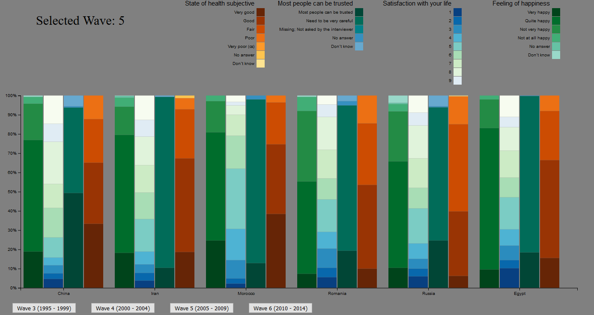

My idea was to reasearch how citizens of different countries considered them selves happy or not and if happiness was correlated with some other variables. I found some variables that I though would correlate a bit with the happiness the citizens felt. In my visualization the user first selects the countries which are to be compared.
Then a set of variables are selected.
In the bar chart below we can compare the selected variables. If we start by comparing the bars for "Feeling of happiness" and "Satisfaction with your life" we see that they are correlated (which may not have been such a big suprise).
We can also select which wave should be shown.
In the second analytic trail I made use of the Gapminder data by mapping it to the "country bubbles". Since Gapminder has a lot of financial and health data, I took the opportunity to compare happiness to wealth and health. Here we see the alcohol consumption mapped to the size:
My hypotesis was that this data was invered correlated to happiness and state of health.
According to this bar chart the "high drinkers" have few citizens that are very happy. But on the other hand so does Egypt which is a drinking country. If we take a look at the state of health we see that the high drinking countries have less citizens with good health, than the low drinking countries. Even though alcohol has a lot of damaging effects on the body, it could not be the only factor causing bad health, because the margins are not that big. But it could be a big part of it.
From this task I have learned a lot about D3 and how to create different visual structures.
My previous experience with JavaScript is limited,
so to make the D3 visualizations has been a lot of work for me.
If I would have had more time then I would make the webpage look more pretty and also add animations to the visualizations.
There is also some bugs that I have not yet fixed, but if I have time later on I will fix them.
But I have learned more that just the programming part.
I have also learned some intressting facts about the countries in the world.